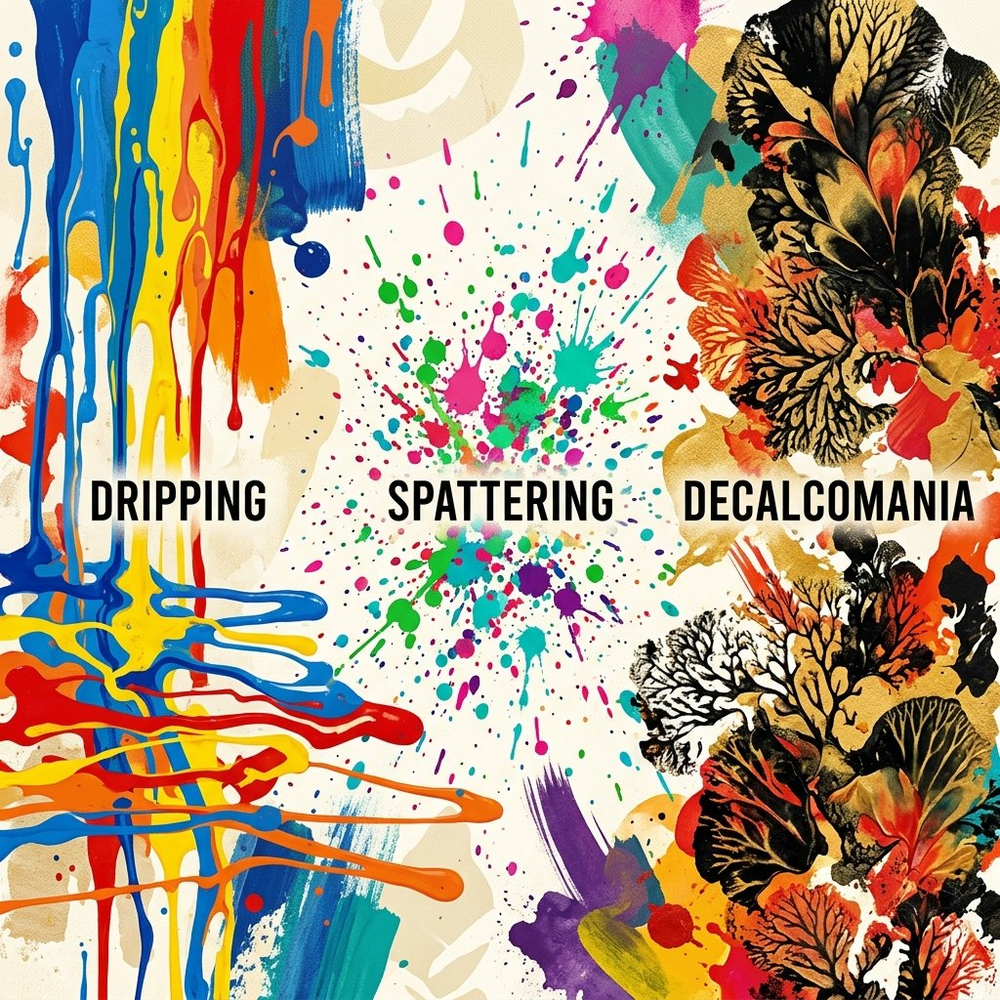
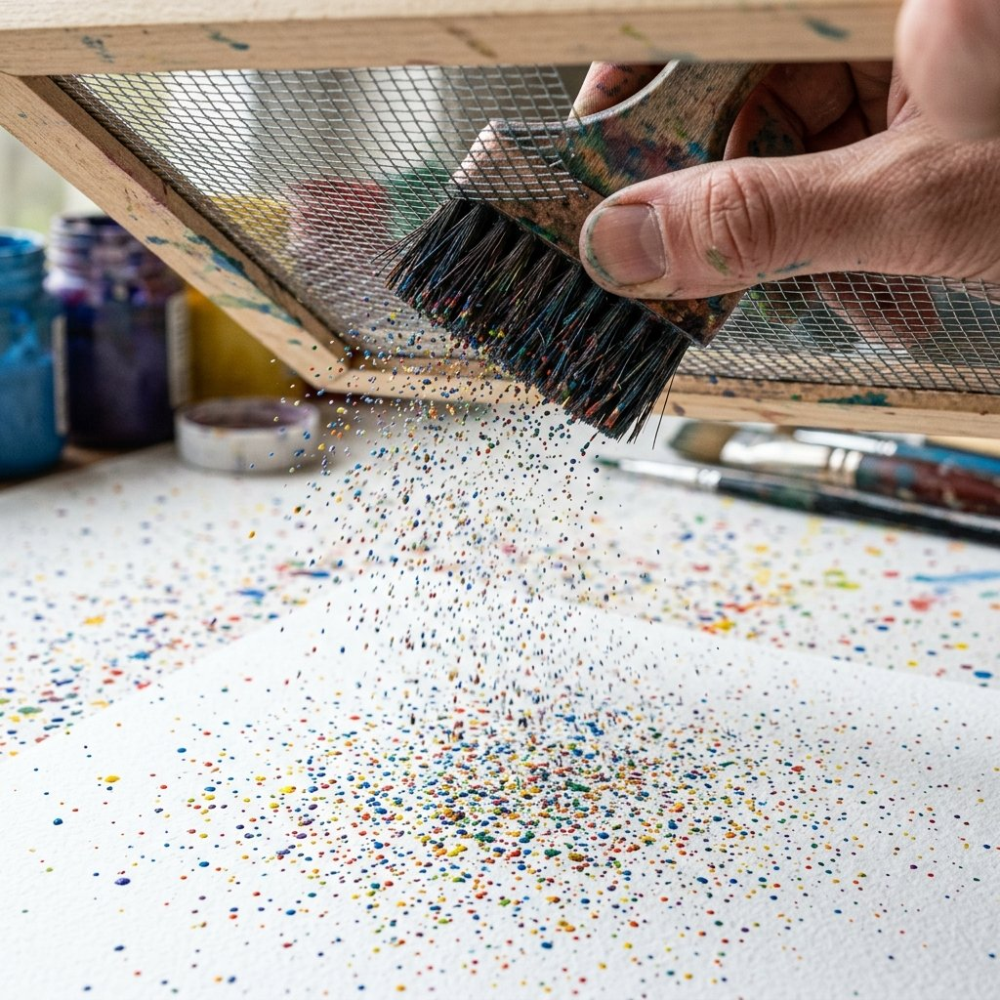
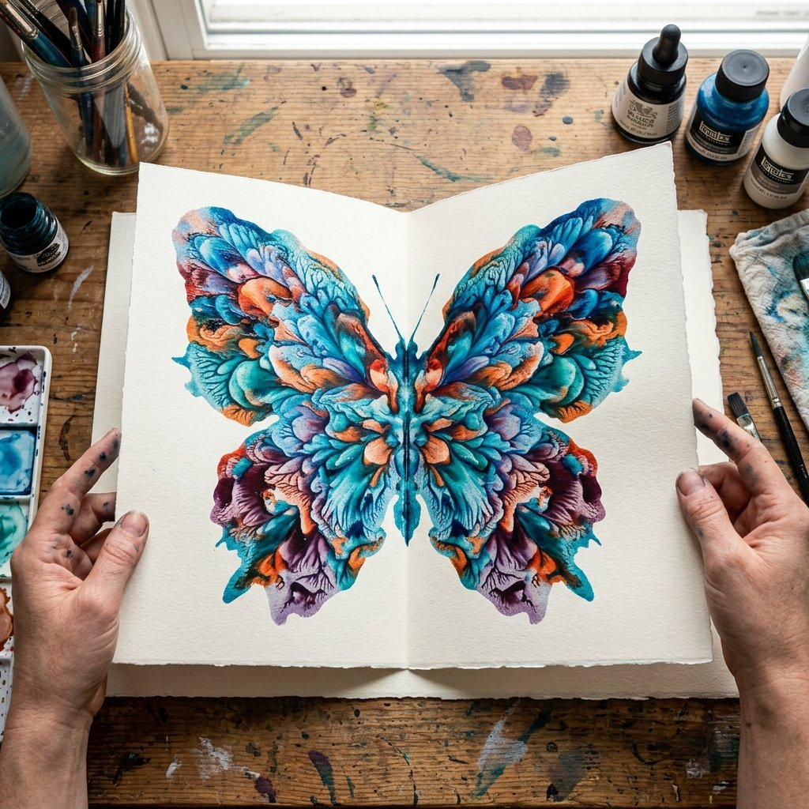
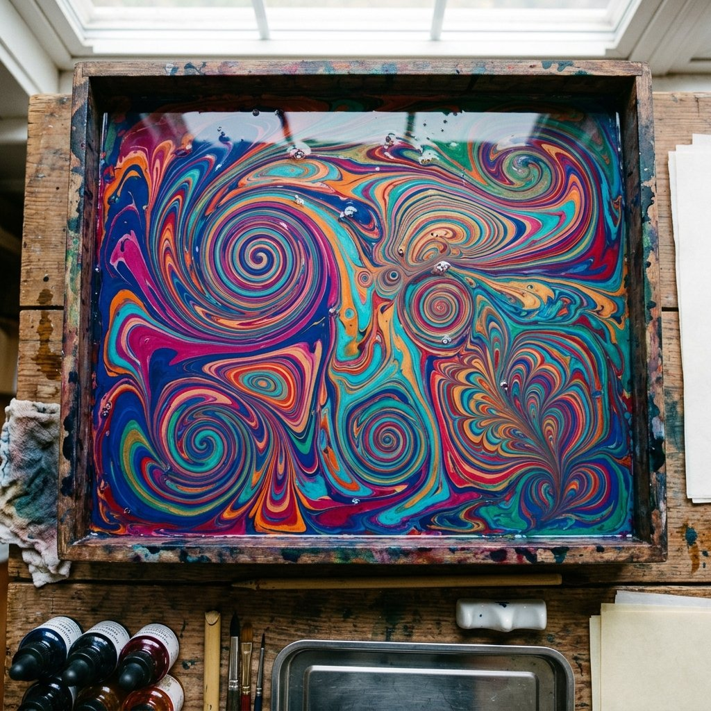
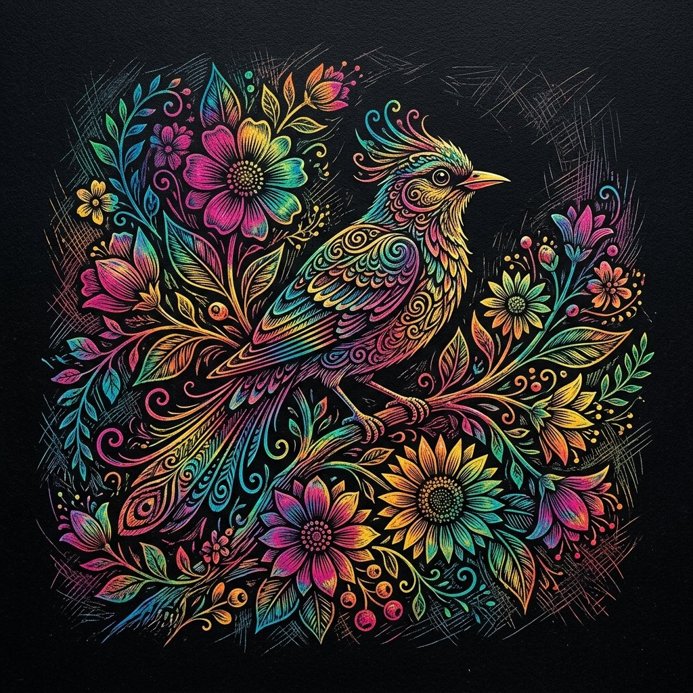
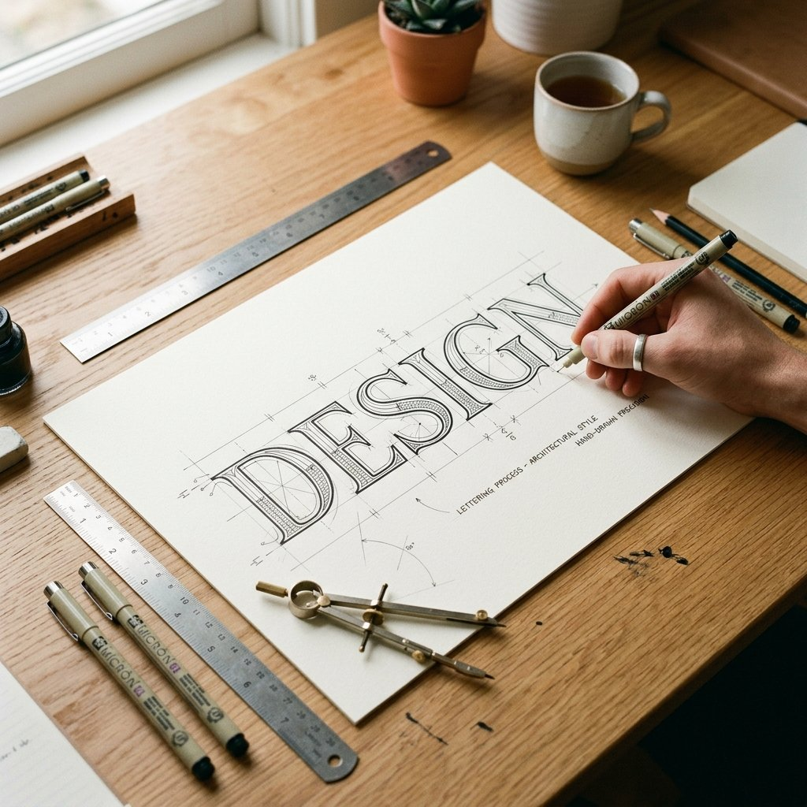
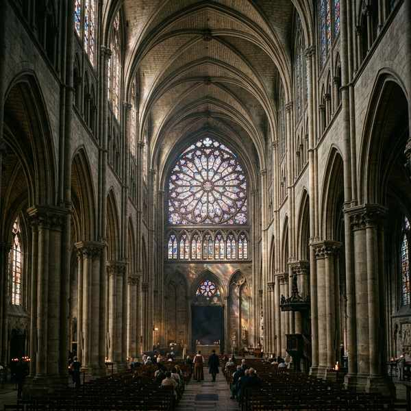
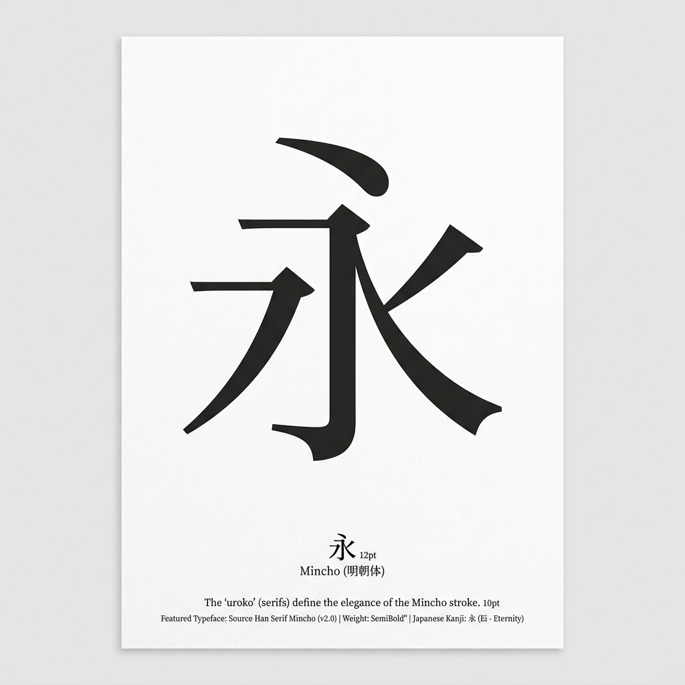
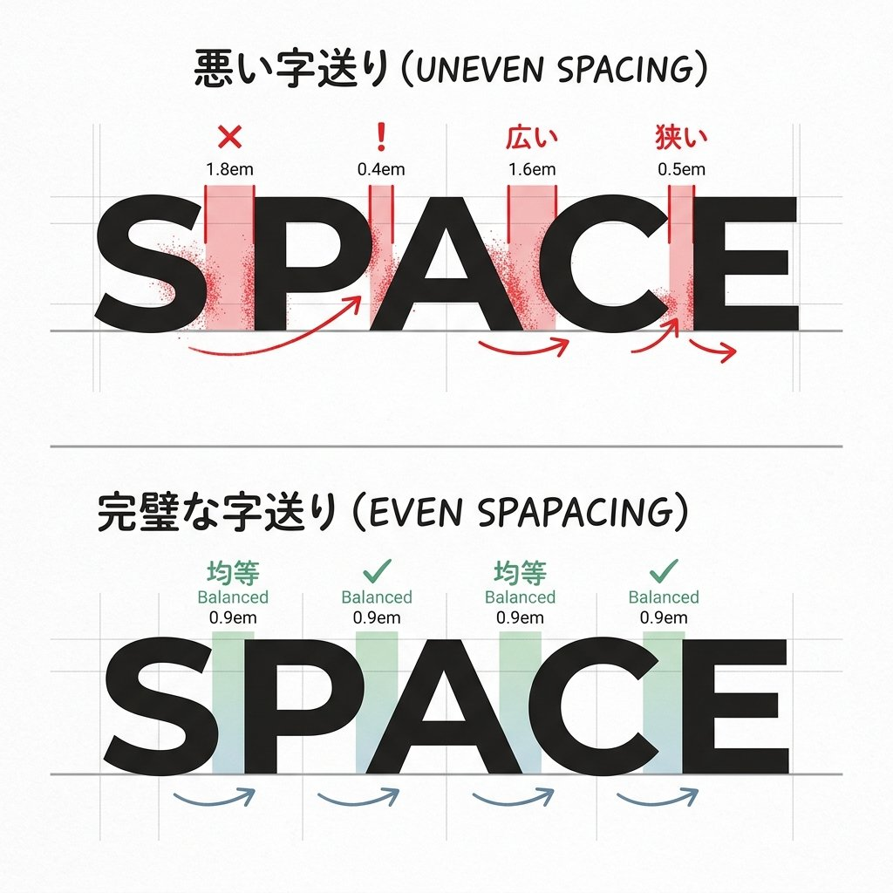

単元3: 表現とレタリング
絵の具やクレヨンなどの画材を使って偶然に生まれた形や色を楽しむ「モダンテクニック」、そして情報を正確に美しく伝えるための文字デザイン「レタリング・書体」の要点をまとめます。テストに出る独特な技法名や文字の特徴を整理しましょう！
1. モダンテクニック（偶然を利用した表現）
あらかじめ描く形を決めず、偶然にできた形や色を利用して独自の表現や効果をつくる技法です。テストでは「説明文から技法名を答えさせる」問題が非常に多く出ます。

偶然の形や色彩を利用して楽しむ絵画技法。




- コラージュ：新聞・写真・印刷物などを切り抜き、キャンバスや画用紙に貼り合わせて構成する技法。
- ドリッピング：水に溶いた絵の具を画用紙に垂らし、ストローなどで息を吹きかけてランダムな線を吹き流す技法。
2. レタリングと書体の特徴
文字を美しく、読みやすく、または目的に合わせて視覚的にデザインすることを「レタリング」と呼びます。定期テストでは代表的な書体の特徴が頻出します。

文字を視覚的にデザインする「レタリング」。
① 代表的な書体
- ゴシック体：縦の線と横の線の太さがほぼ同じ書体。力強く、遠くからでも見やすいためポスターや看板、標識などに使われます。

- 明朝体（みんちょうたい）：横の線が細く、縦の線が太い書体。横の線の右端に「うろこ」と呼ばれる三角形の飾りがつくのが特徴で、教科書や新聞などの長文の本文によく使われます。

- 楷書体（かいしょたい）：筆で書いた書き文字をもとにした書体。
- 勘亭流（かんていりゅう）：太くてうねりのある、歌舞伎の看板や番付などに使われる日本の伝統書体。

② 文字の配置バランス
- 字配り（じくばり）／ スペーシング：文字の大きさや間隔のバランスを適切に配置すること。レタリングにおいて全体の美しさを決定する非常に重要な作業です。

🔥 定期テスト対策・暗記のコツ
① モダンテクニックのキーワード暗記
「金網・網 ➔ スパッタリング」「合わせ絵・二つ折り ➔ デカルコマニー」「水面・墨流し ➔ マーブリング」「凹凸・こすり出す ➔ フロッタージュ」「ひっかき ➔ スクラッチ」と、問題文にある特徴的な名詞から一発で引き出せるように連想ゲームのように覚えましょう。
② 明朝体の「うろこ」
明朝体の最大の特徴である線の右側の飾りを「うろこ」といいます。漢字での書き方や、穴埋め問題で頻出です。
③ 勘亭流＝歌舞伎！
日本の伝統的芸能である「歌舞伎」で使われる独特の筆文字書体を「勘亭流」といいます。音楽や美術史との教科横断的な問題で出やすいため、必ず漢字で書けるように整理してください。